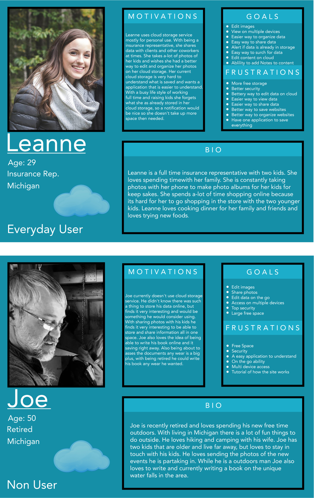
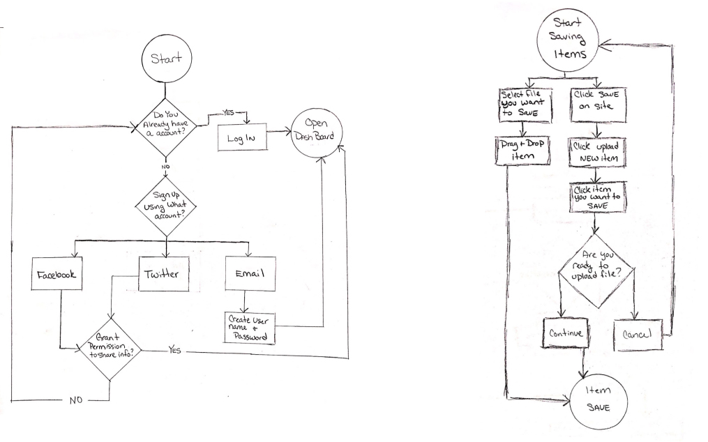
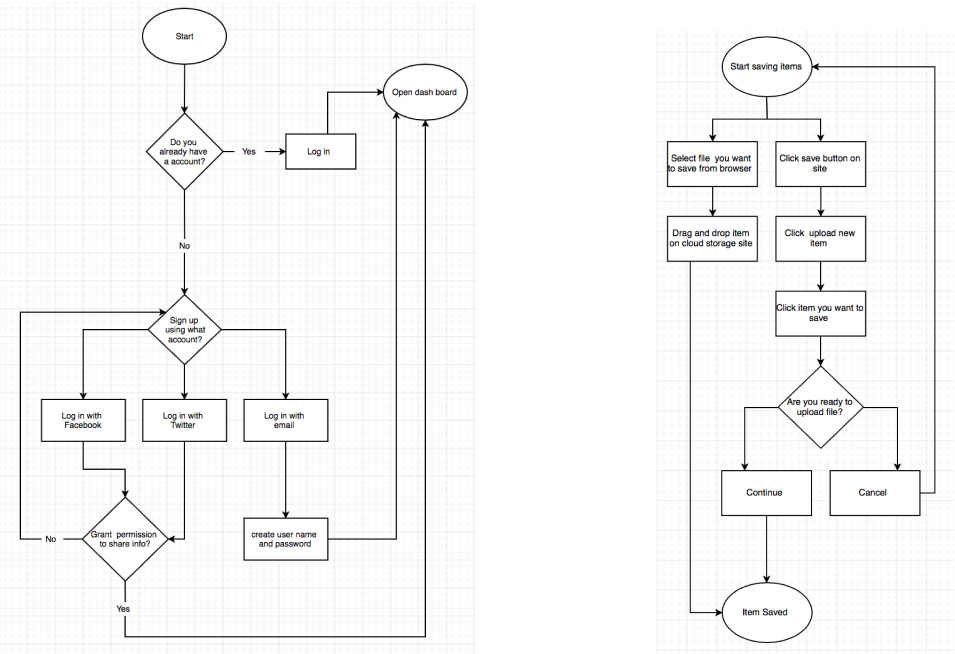
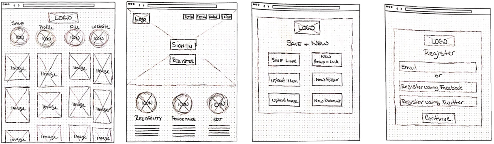
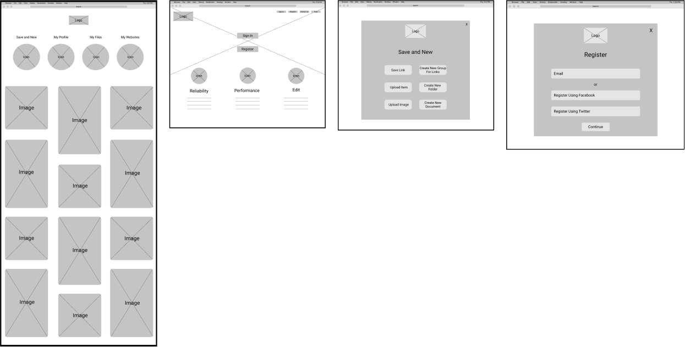
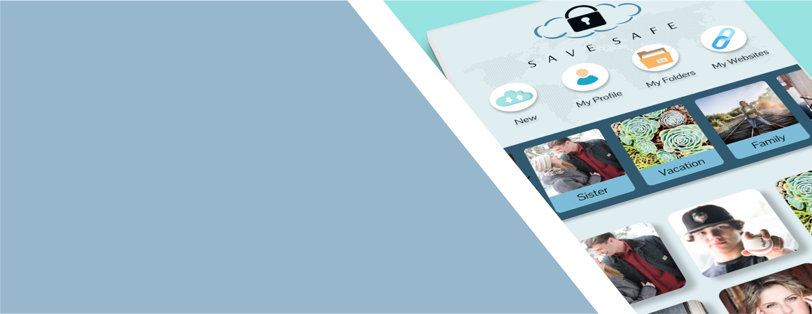
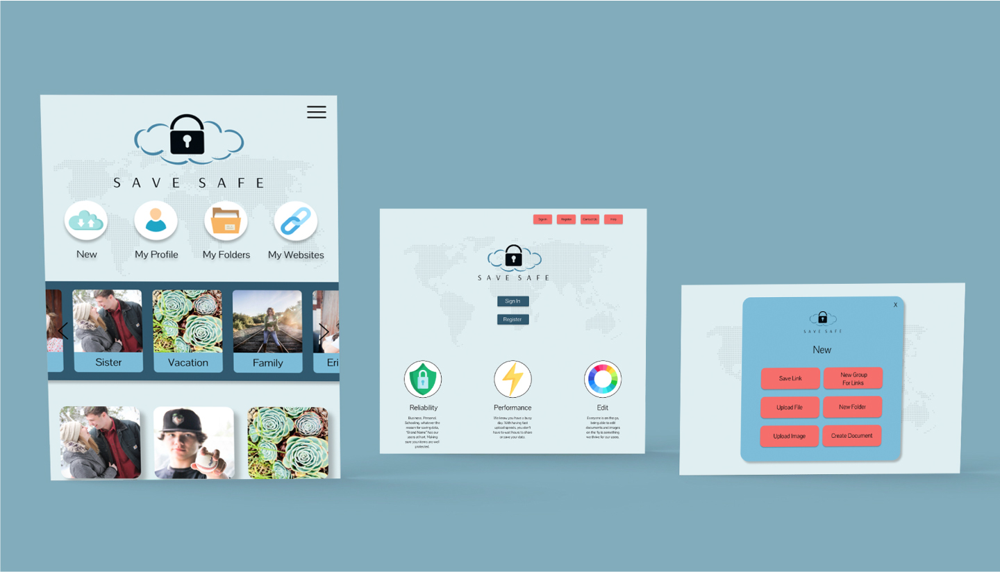
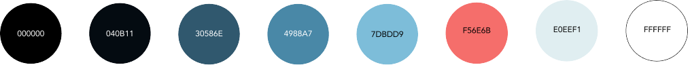
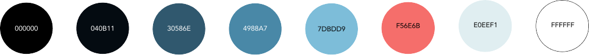

Save Safe Case Study
Cloud storage app for the everyday saver.
PrototypeOverview
- Role
- UX Visual Design & Branding
- Tools
- Figma,Invision,Google Docs & Adobe Photoshop
- Date
- Winter 2019
- Skills
- Survey Design, Competitive Analysis, User Stories & Flows, Creating Personas, Conducting User Interviews & Observations, Sketching, Wireframing, Prototyping, User Testing & Analysis
Problem
There was multiple items needed to be solved for this project.
- Create name or brand
- Save content
- What platform
- Organize content
- Target audience
- Create new content
- Collaboration
- Upload new files
This is all problems that needed to be solved for this project.
Solution
A easy to use cloud storage survice called Save Safe. This application is great for every type of user that allows you to save, edit and organize your data on the go.
Process
The cloud storage service is growing and the client seen a opening that allowed users to save everything in one location, but needed help laying and designing this application. This is where I came in, I used the following tools to develop what was needed for Save Safe.
- User Surveys
- SWOT Analysis
- User Personas
- User Stories
- User Flows
- Wireframes
- Analysis of Testing
- Mockups
- Branding Work
- Typface
- Prototype
User Surveys
I conducted user surveys to help more understand what the users want in a cloud storage application. During this test it gave me inside on if this application will be used for desktop or desktop and mobile. It also helped me find what our target audience will be for this application. I asked the users about collaboration and what every user is looking for in there cloud storage application. This is a great tool to get started figuring out what needs to be in each site.
SWOT Analysis
I did a comptitive analysis on Google Drive, Dropbox and Pinterest. I learned what works and what doesnt work for the users. Doing these analysis allow me be better uderstand what the users need for Save Safe.
Personas
User Personas showed me about what type of users will want to use this application. It allowed me to see the age difference and goals of each user and how each user may not use the application the same way.
User Stories
When creating the user stories for this application I wanted to display the main functions a user may do during the presents on this application. This gives me the ability to see what needs to be done on the application and what is the main goals for the users. This gives me a easier way to break down what pages are needed to develop this cloud storage service.
User Flows
I designed user flows after the following tests and research to figure out what would be the best and easiest way to complete high priority tasks for the user. This allows me to make changes easier before designing and layout every page needed.
 Wireframes
Wireframes are a great way to figure out if the user finds the layout simple or hard to understand without pudding a lot of effort into the design process of this application.
 Analysis of Test
- Test 1
- During the first test, the tester worked Through the functions well. The tester had a hard time understanding some of the names of the buttons so this is something I needed to go back and work on.
- Test 2
- Overall this testers process went well. The tester didnt know how to organize photos, so I would like to figure out a better way to organize the photos into groups for the users.
- Test 3
- During this usability test I learned that I could work on the name of the buttons. For they where confusing for this tester.
Mockups
My First Mockups some of my colors used in the application didn’t work well together for every user. I tested the new colors against each other to make sure they work well for each user and they did.
 Branding
At first glance I want the user to feel this security of this brand. I did a lot of sketches till I came up with the lock cloud logo. The logo with the blue color scheme will give the users a feeling of trust and experiance. We would like to name the brand SAVE SAFE. The name Save Safe says it all about the brand and what this application is designed for, to save and keep safe. All the elements together will play great to deliver the feeling and message to the potential users that they can save everything in a safe and secure area with a easy and fresh feeling.
 

Typeface
I choose Plantagenet Cherokee as one of the options for the brand typeface because it is a serif humanist font. This font is dressy with the feet on all letters, when displayed in a capital display. This font also has uneven lines, witch gives it a feeling of strong and elegant all at the same time.
ABCDEFGHIJKLMNOPQRSTUVWXYZ abcdefghijklmnopqrstuvwxyz 0123456789
I paired it with a complementary typeface that plays well with my brand typeface. I chose Ovo as the complementary typeface because it is also a elegant and strong font but with lines that are not so vag. This font is also a serif humanist with the feet also giving it a dressy feeling.
ABCDEFGHIJKLMNOPQRSTUVWXYZ abcdefghijklmnopqrstuvwxyz 0123456789
Prototype
Great feedback about names and functions that needed to be added to this application to make it easier for the user.I also needed to add a photo group area to this application.
Analysis of Test
- Test 1
- Overall the test went very well. The tester didn’t have any issue with completing any of the tasks. The one thing that I thought of after going over all of the tests and questions asked. is the Drag and Drop page. This works well for a desktop layout but for mobile it doesn't work for the user.
- Test 2
- After this test I went over all of my results. I found out that I don’t have a area where users can view groups of images. This would be a great thing to add to the dashboard page for the users. I am going to play with some idea on where to place this function to make it easy for the users to view.
- Test 3
- During this test I wrote down some items that I need to look into to make it less confusing for the users. The name in the new link I need to review. The names on the buttons don’t seem to be clear to the users so I would like to look into better names for those buttons. Also the groups for images again. I need to find a good location for those groups to be located for the users.
Conclusion
Save Safe was a project that taught me the importance of testing throughout this design process. User testing helped me to determine what needed to happen to make this application successful. Testing allowed for quick iteration and discovery of unidentified problems which resulted in a far improved final product and inspired a more informed solution. With research and more testing it allowed me to develop a great brand for Save Safe to develop a applocation that not only looks great for the users but works great also.